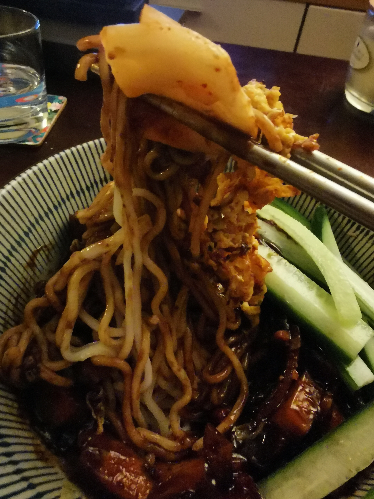

Vegan Jjajangmyeon

Description
As a vegan, I have never been able to try the original version of jjajangmyeon (짜장면) which usually has pork, but my meat-eating partner seems to quite enjoy this version too.
Praise unto The Korean Vegan (TKV) for veganizing all these wonderful Korean recipes - and for my partner's mum sending us back from Seattle with massive jars of jjajang (Korean black bean paste).
I'll be honest and say that I've thrown in some of my own personal tweaks that make this recipe slightly easier but probably not as good and less authentic. If you want the real deal, TKV cookbook is where it's at.
Ingredients
- 4 dried shitake mushrooms, soaked
- 1 cup fresh mushrooms of choice
- 1 cup chopped onion
- 3-4 cloves garlic to taste
- 1 potato
- 1/2 a courgette
- 1 cup chopped cabbage
- 1/4 cup jjajang - more to taste
- 1 tbsp soy sauce - more to taste
- 1/2 cup mushroom dashi (if you don't have this/have time to make this, I will often use the water I've used to soak the shitakes and soak an inch or two of kombu in there too)
- 2 tbsp syrup of choice (I usually go maple)
- 2 tbsp potato starch mixed with 1/4 cup water
- 4 servings noodles - whatever kind you like (we normally go with udon or ramen, or make our own as per TKV's recipe if we're feeling full of energy)
- 1 cup julienned cucumber (disclaimer: I do not know how to julienne)
Steps
- Soak the shitakes (with kombu, if doing the makeshift dashi nonsense as above) in water for around 1 hr to reconstitute
- Heat oil in a wok or very large pan and add chopped shitakes (and kombu), reserve water
- Add the rest of the chopped up veggies (including garlic & onions) to the pan and cook for around 5 minutes, stirring or shoogling frequently
- Remove everything from the pan and set aside
- Add some more oil to the same pan and, once hot, add jjajang. Stir jjajang and oil constantly so it doesn't burn until it gets very shiny (1-2 mins)
- Add cooked veggies back to the pan and stir until everything is coated with jjajang
- Add soy sauce, dashi (/mushroom-kombu water) and syrup and bring to a boil
- Cover pan and simmer until potatoes are nearly cooked (about 5 mins)
- Add potato starch and water mix and cook until sauce is think and shiny, about 1 more minute
- Serve with noodles and garnish with cucumber and enjoy!